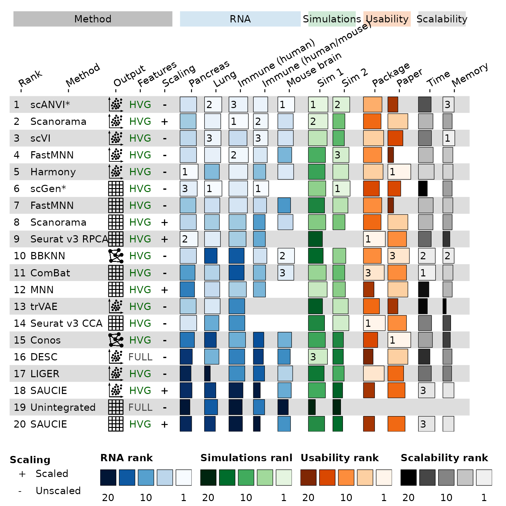

Introduction
The single-cell
integration benchmarking (scIB) project was an effort to evaluate
and compare the performance of methods for integrating single-cell RNA
and ATAC sequencing datasets (Luecken et al.
2021). Many of the results were displayed using custom scripts to
create visualisations similar to those produced by
funkyheatmap.
In this vignette we will show how these figures can be reproduced
using funkyheatmap.
Summary figure
The first figure we will recreate is the summary figure showing the performance of all methods on RNA data. Here is the original for reference:

scIB RNA summary figure
Data
The steps for summarising the raw metric scores are quite complex so
we have included a pre-processed summary table as part of
funkyheatmap which is produced from the files available in
the scIB
reproducibility repository.
data("scib_summary")
glimpse(scib_summary)
#> Rows: 20
#> Columns: 27
#> $ method <chr> "scANVI*", "Scanorama", "scVI", "FastMNN",…
#> $ output <chr> "Embedding", "Embedding", "Embedding", "Em…
#> $ features <chr> "HVG", "HVG", "HVG", "HVG", "HVG", "HVG", …
#> $ scaling <chr> "Unscaled", "Scaled", "Unscaled", "Unscale…
#> $ avg_rank <dbl> 4.6, 8.0, 9.4, 10.4, 13.2, 13.2, 18.0, 21.…
#> $ overall_immune_cell_hum <dbl> 0.8217139, 0.8484369, 0.7880395, 0.8456189…
#> $ overall_immune_cell_hum_mou <dbl> 0.6275154, 0.6415929, 0.6367120, 0.6049282…
#> $ overall_lung_atlas <dbl> 0.7557935, 0.7088485, 0.7196019, 0.7083853…
#> $ overall_mouse_brain <dbl> 0.7331990, 0.6725443, 0.6773415, 0.6062384…
#> $ overall_pancreas <dbl> 0.7238847, 0.7034837, 0.7134047, 0.7200626…
#> $ overall_simulations_1_1 <dbl> 0.8528483, 0.8522969, 0.8141741, 0.7446178…
#> $ overall_simulations_2 <dbl> 0.7365843, 0.5265792, 0.5022136, 0.7052069…
#> $ rank_immune_cell_hum <dbl> 4, 1, 14, 2, 5, 7, 10, 21, 20, 47, 48, 19,…
#> $ rank_immune_cell_hum_mou <dbl> 4.0, 2.0, 3.0, 9.0, 25.0, 1.0, 15.0, 33.0,…
#> $ rank_lung_atlas <dbl> 3.0, 6.0, 5.0, 7.0, 28.0, 2.0, 15.0, 23.0,…
#> $ rank_mouse_brain <dbl> 1, 10, 9, 21, 7, 50, 27, 12, 50, 2, 6, 50,…
#> $ rank_pancreas <dbl> 11, 21, 16, 13, 1, 6, 23, 17, 2, 14, 33, 4…
#> $ rank_simulations_1_1 <dbl> 3, 4, 13, 35, 38, 23, 46, 25, 57, 53, 21, …
#> $ rank_simulations_2 <dbl> 4, 25, 28, 6, 8, 2, 12, 23, 61, 19, 26, 20…
#> $ package_score <dbl> 0.8102822, 0.7686694, 0.8831989, 0.7993550…
#> $ package_rank <dbl> 10.0, 7.0, 12.0, 9.0, 11.0, 5.0, 9.0, 7.0,…
#> $ paper_score <dbl> 0.43750, 0.87500, 0.65625, 0.25000, 1.0000…
#> $ paper_rank <dbl> 2.5, 12.0, 5.0, 1.0, 15.5, 4.0, 1.0, 12.0,…
#> $ time_score <dbl> 0.5540645, 0.6355258, 0.5682302, 0.6434753…
#> $ time_rank <dbl> 21, 40, 29, 41, 47, 7, 41, 40, 25, 54, 55,…
#> $ memory_score <dbl> 0.4905173, 0.4046461, 0.5201664, 0.4347876…
#> $ memory_rank <dbl> 54, 36, 56, 43, 47, 35, 43, 36, 12, 55, 46…This data frame contains several columns: details of the method version and output, an average rank used to order the table, overall scores and ranks for the performance on each dataset, usability scores and ranks (for the package and paper), and scalability scores and ranks (for both time and memory). All of these will go into the summary table.
The dataset requires some preparation for the
funky_heatmap() function. We will create an id
column using the row numbers (the data is already sorted by performance
ranking). We also create label columns for each of the scores showing
the top 3 performers and relabel some of the columns. Finally, we subset
to a the set of columns we want to plot.
# A small helper function for creating rank labels for each column.
# It takes a scores, ranks them and returns a character vector with labels for
# the top 3 scores. Any additional arguments are passed to the `rank()`
# function.
label_top_3 <- function(scores, ...) {
ranks <- rank(scores, ...)
ifelse(ranks <= 3, as.character(ranks), "")
}
scib_summary_plot <- scib_summary |>
# Create an ID column showing the final rank
mutate(id = as.character(seq_len(nrow(scib_summary)))) |>
# Set the labels for the scaling and features columns
mutate(
scaling = factor(
scaling,
levels = c("Unscaled", "Scaled"),
labels = c("-", "+")
),
features = factor(
features,
levels = c("Full", "HVG"),
labels = c("FULL", "HVG")
)
) |>
# Create a column with paths to output images
mutate(
output_img = case_match(
output,
"Features" ~ "images/matrix.png",
"Embedding" ~ "images/embedding.png",
"Graph" ~ "images/graph.png"
)
) |>
# Create rank labels
mutate(
label_pancreas = label_top_3(rank_pancreas),
label_lung_atlas = label_top_3(rank_lung_atlas),
label_immune_cell_hum = label_top_3(rank_immune_cell_hum),
label_immune_cell_hum_mou = label_top_3(rank_immune_cell_hum_mou),
label_mouse_brain = label_top_3(rank_mouse_brain),
label_simulations_1_1 = label_top_3(rank_simulations_1_1),
label_simulations_2 = label_top_3(rank_simulations_2),
package_label = label_top_3(-package_rank, ties.method = "min"),
paper_label = label_top_3(-paper_rank, ties.method = "min"),
time_label = label_top_3(-time_rank, ties.method = "min"),
memory_label = label_top_3(-memory_rank, ties.method = "min")
) |>
as.data.frame()
glimpse(scib_summary_plot)
#> Rows: 20
#> Columns: 40
#> $ method <chr> "scANVI*", "Scanorama", "scVI", "FastMNN",…
#> $ output <chr> "Embedding", "Embedding", "Embedding", "Em…
#> $ features <fct> HVG, HVG, HVG, HVG, HVG, HVG, HVG, HVG, HV…
#> $ scaling <fct> -, +, -, -, -, -, -, +, +, -, -, +, -, -, …
#> $ avg_rank <dbl> 4.6, 8.0, 9.4, 10.4, 13.2, 13.2, 18.0, 21.…
#> $ overall_immune_cell_hum <dbl> 0.8217139, 0.8484369, 0.7880395, 0.8456189…
#> $ overall_immune_cell_hum_mou <dbl> 0.6275154, 0.6415929, 0.6367120, 0.6049282…
#> $ overall_lung_atlas <dbl> 0.7557935, 0.7088485, 0.7196019, 0.7083853…
#> $ overall_mouse_brain <dbl> 0.7331990, 0.6725443, 0.6773415, 0.6062384…
#> $ overall_pancreas <dbl> 0.7238847, 0.7034837, 0.7134047, 0.7200626…
#> $ overall_simulations_1_1 <dbl> 0.8528483, 0.8522969, 0.8141741, 0.7446178…
#> $ overall_simulations_2 <dbl> 0.7365843, 0.5265792, 0.5022136, 0.7052069…
#> $ rank_immune_cell_hum <dbl> 4, 1, 14, 2, 5, 7, 10, 21, 20, 47, 48, 19,…
#> $ rank_immune_cell_hum_mou <dbl> 4.0, 2.0, 3.0, 9.0, 25.0, 1.0, 15.0, 33.0,…
#> $ rank_lung_atlas <dbl> 3.0, 6.0, 5.0, 7.0, 28.0, 2.0, 15.0, 23.0,…
#> $ rank_mouse_brain <dbl> 1, 10, 9, 21, 7, 50, 27, 12, 50, 2, 6, 50,…
#> $ rank_pancreas <dbl> 11, 21, 16, 13, 1, 6, 23, 17, 2, 14, 33, 4…
#> $ rank_simulations_1_1 <dbl> 3, 4, 13, 35, 38, 23, 46, 25, 57, 53, 21, …
#> $ rank_simulations_2 <dbl> 4, 25, 28, 6, 8, 2, 12, 23, 61, 19, 26, 20…
#> $ package_score <dbl> 0.8102822, 0.7686694, 0.8831989, 0.7993550…
#> $ package_rank <dbl> 10.0, 7.0, 12.0, 9.0, 11.0, 5.0, 9.0, 7.0,…
#> $ paper_score <dbl> 0.43750, 0.87500, 0.65625, 0.25000, 1.0000…
#> $ paper_rank <dbl> 2.5, 12.0, 5.0, 1.0, 15.5, 4.0, 1.0, 12.0,…
#> $ time_score <dbl> 0.5540645, 0.6355258, 0.5682302, 0.6434753…
#> $ time_rank <dbl> 21, 40, 29, 41, 47, 7, 41, 40, 25, 54, 55,…
#> $ memory_score <dbl> 0.4905173, 0.4046461, 0.5201664, 0.4347876…
#> $ memory_rank <dbl> 54, 36, 56, 43, 47, 35, 43, 36, 12, 55, 46…
#> $ id <chr> "1", "2", "3", "4", "5", "6", "7", "8", "9…
#> $ output_img <chr> "images/embedding.png", "images/embedding.…
#> $ label_pancreas <chr> "", "", "", "", "1", "3", "", "", "2", "",…
#> $ label_lung_atlas <chr> "2", "", "3", "", "", "1", "", "", "", "",…
#> $ label_immune_cell_hum <chr> "3", "1", "", "2", "", "", "", "", "", "",…
#> $ label_immune_cell_hum_mou <chr> "", "2", "3", "", "", "1", "", "", "", "",…
#> $ label_mouse_brain <chr> "1", "", "", "", "", "", "", "", "", "2", …
#> $ label_simulations_1_1 <chr> "1", "2", "", "", "", "", "", "", "", "", …
#> $ label_simulations_2 <chr> "2", "", "", "3", "", "1", "", "", "", "",…
#> $ package_label <chr> "", "", "", "", "", "", "", "", "1", "", "…
#> $ paper_label <chr> "", "", "", "", "1", "", "", "", "", "3", …
#> $ time_label <chr> "", "", "", "", "", "", "", "", "", "2", "…
#> $ memory_label <chr> "3", "", "1", "", "", "", "", "", "", "2",…Column information
The first step in plotting the figure is to create a data frame describing how we want to plot the columns.
column_info <- tribble(
~ id, ~ name, ~ geom, ~ group, ~ palette, ~ width, ~ legend, ~ hjust, ~ overlay,
"id", "Rank", "text", "Method", NA, 1, FALSE, 0, FALSE,
"method", "Method", "text", "Method", NA, 5, FALSE, 0, FALSE,
"output_img", "Output", "image", "Method", NA, 1, FALSE, 0.5, FALSE,
"features", "Features", "text", "Method", NA, 2, FALSE, 0.5, FALSE,
"scaling", "Scaling", "text", "Method", NA, 1, TRUE, 0.5, FALSE,
"overall_pancreas", "Pancreas", "bar", "RNA", "blues", 1.5, TRUE, NA, FALSE,
"label_pancreas", NA, "text", "RNA", NA, NA, FALSE, 0.1, TRUE,
"overall_lung_atlas", "Lung", "bar", "RNA", "blues", 1.5, TRUE, NA, FALSE,
"label_lung_atlas", NA, "text", "RNA", NA, NA, FALSE, 0.1, TRUE,
"overall_immune_cell_hum", "Immune (human)", "bar", "RNA", "blues", 1.5, TRUE, NA, FALSE,
"label_immune_cell_hum", NA, "text", "RNA", NA, NA, FALSE, 0.1, TRUE,
"overall_immune_cell_hum_mou", "Immune (human/mouse)", "bar", "RNA", "blues", 1.5, TRUE, NA, FALSE,
"label_immune_cell_hum_mou", NA, "text", "RNA", NA, NA, FALSE, 0.1, TRUE,
"overall_mouse_brain", "Mouse brain", "bar", "RNA", "blues", 1.5, TRUE, NA, FALSE,
"label_mouse_brain", NA, "text", "RNA", NA, NA, FALSE, 0.1, TRUE,
"overall_simulations_1_1", "Sim 1", "bar", "Simulations", "greens", 1.5, TRUE, NA, FALSE,
"label_simulations_1_1", NA, "text", "Simulations", NA, NA, FALSE, 0.1, TRUE,
"overall_simulations_2", "Sim 2", "bar", "Simulations", "greens", 1.5, TRUE, NA, FALSE,
"label_simulations_2", NA, "text", "Simulations", NA, NA, FALSE, 0.1, TRUE,
"package_score", "Package", "bar", "Usability", "oranges", 1.5, TRUE, NA, FALSE,
"package_label", NA, "text", "Usability", NA, NA, FALSE, 0.1, TRUE,
"paper_score", "Paper", "bar", "Usability", "oranges", 1.5, TRUE, NA, FALSE,
"paper_label", NA, "text", "Usability", NA, NA, FALSE, 0.1, TRUE,
"time_score", "Time", "bar", "Scalability", "greys", 1.5, TRUE, NA, FALSE,
"time_label", NA, "text", "Scalability", NA, NA, FALSE, 0.1, TRUE,
"memory_score", "Memory", "bar", "Scalability", "greys", 1.5, TRUE, NA, FALSE,
"memory_label", NA, "text", "Scalability", NA, NA, FALSE, 0.1, TRUE,
)
column_info
#> # A tibble: 27 × 9
#> id name geom group palette width legend hjust overlay
#> <chr> <chr> <chr> <chr> <chr> <dbl> <lgl> <dbl> <lgl>
#> 1 id Rank text Meth… NA 1 FALSE 0 FALSE
#> 2 method Method text Meth… NA 5 FALSE 0 FALSE
#> 3 output_img Output image Meth… NA 1 FALSE 0.5 FALSE
#> 4 features Featu… text Meth… NA 2 FALSE 0.5 FALSE
#> 5 scaling Scali… text Meth… NA 1 TRUE 0.5 FALSE
#> 6 overall_pancreas Pancr… bar RNA blues 1.5 TRUE NA FALSE
#> 7 label_pancreas NA text RNA NA NA FALSE 0.1 TRUE
#> 8 overall_lung_atlas Lung bar RNA blues 1.5 TRUE NA FALSE
#> 9 label_lung_atlas NA text RNA NA NA FALSE 0.1 TRUE
#> 10 overall_immune_cell_hum Immun… bar RNA blues 1.5 TRUE NA FALSE
#> # ℹ 17 more rowsAs shown in the other vignettes this table includes the type of geom for each each column and how they are grouped as well as some configuration options for how they are displayed. Note that we overlay the labels for each score over the corresponding bars.
We also describe the various column groups.
column_groups <- tribble(
~ group, ~ palette, ~ level1,
"Method", "Method", "Method",
"RNA", "blues", "RNA",
"Simulations", "greens", "Simulations",
"Usability", "oranges", "Usability",
"Scalability", "greys", "Scalability",
)
column_groups
#> # A tibble: 5 × 3
#> group palette level1
#> <chr> <chr> <chr>
#> 1 Method Method Method
#> 2 RNA blues RNA
#> 3 Simulations greens Simulations
#> 4 Usability oranges Usability
#> 5 Scalability greys ScalabilityThere isn’t much customisation here, we are mostly just defining the labels for each group.
Row information
We aren’t applying any grouping to the rows so the row information is very basic.
row_info <- data.frame(id = scib_summary_plot$id, group = NA_character_)
row_info
#> id group
#> 1 1 <NA>
#> 2 2 <NA>
#> 3 3 <NA>
#> 4 4 <NA>
#> 5 5 <NA>
#> 6 6 <NA>
#> 7 7 <NA>
#> 8 8 <NA>
#> 9 9 <NA>
#> 10 10 <NA>
#> 11 11 <NA>
#> 12 12 <NA>
#> 13 13 <NA>
#> 14 14 <NA>
#> 15 15 <NA>
#> 16 16 <NA>
#> 17 17 <NA>
#> 18 18 <NA>
#> 19 19 <NA>
#> 20 20 <NA>Palettes
The last thing we define is the palettes. This are very similar to the default palettes but we include them here as an example and so they can be easily modified if needed.
palettes <- tribble(
~ palette, ~ colours,
"features", c("green", "red"),
"blues", grDevices::colorRampPalette(
rev(RColorBrewer::brewer.pal(9, "Blues"))
)(101),
"greens", grDevices::colorRampPalette(
rev(RColorBrewer::brewer.pal(9, "Greens"))
)(101),
"oranges", grDevices::colorRampPalette(
rev(RColorBrewer::brewer.pal(9, "Oranges"))
)(101),
"greys", grDevices::colorRampPalette(
rev(RColorBrewer::brewer.pal(9, "Greys"))
)(101)
)Figure
Now that we have defined everything we can make the summary figure.
funky_heatmap(
scib_summary_plot,
column_info = column_info,
column_groups = column_groups,
row_info = row_info,
palettes = palettes,
scale_column = FALSE,
col_annot_offset = 4
)
#> ℹ No legends were provided, trying to automatically infer legends.
#> ℹ Some palettes were not used in the column info, adding legends for them.
#> ℹ Legend 1 did not contain a geom, inferring from the column info.
#> ! Legend 1 has geom 'bar', which is not yet implemented. Disabling for now.
#> ℹ Legend 2 did not contain a geom, inferring from the column info.
#> ! Legend 2 has geom 'bar', which is not yet implemented. Disabling for now.
#> ℹ Legend 3 did not contain a geom, inferring from the column info.
#> ! Legend 3 has geom 'bar', which is not yet implemented. Disabling for now.
#> ℹ Legend 4 did not contain a geom, inferring from the column info.
#> ! Legend 4 has geom 'bar', which is not yet implemented. Disabling for now.
#> Warning in funky_heatmap(scib_summary_plot, column_info = column_info,
#> column_groups = column_groups, : Argument `col_annot_offset` is deprecated. Use
#> `position_arguments(col_annot_offset = ...)` instead.
#> Warning: Removed 12 rows containing missing values (`geom_rect()`).
This isn’t exactly like the original figure but it is fairly close.
Most of the differences are cosmetic such as alignment of labels and the
lack of fancy headings (which were created in an image editing program
for the original figure). Perhaps the most significant difference is
that here the bars are coloured by the scores while in the original they
were coloured by rank. This is currently a limitation of
funky_heatmap() that one variable is use for both colour
and length of the bars. If you compare closely to the original figure
you may also notice some changes in the method ranking compared to the
original figure due to small difference in the pre-processing of the raw
data.